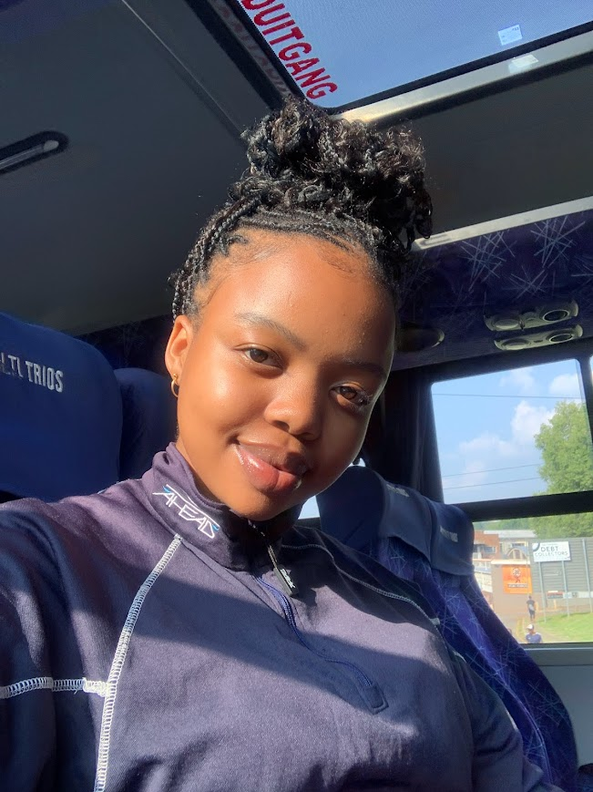

Welcome to my Home...page
This is a curated space for digital expression, creative exploration, and thoughtful design. Step inside and explore text, visuals, and ideas that reflect a student's mind at work through creativity, and tailored with intention.
Here you’ll find my weekly blog posts, class explorations, and creative updates as this space continues to grow and evolve. Take your time, explore, and enjoy the journey. Get in touch if you’d like to collaborate, chat about design, or are curious about the person behind the screen.

Hi! I'm Sisanda Gabela
A 3rd Year Digital Arts Student at the University of the Witwatersrand
In: Johannesburg, South Africa
This site is my digital scrapbook: part progress journal, part design playground. I’m documenting my journey into UX/UI design after switching career paths (I spent a year at a different uni before finding my way here). It’s been a wild and wonderful shift filled with learning, late-night sketching, video edits, new friendships, and endless style guides. You’ll find design ideas, portfolio updates, reflections on code, rants about bugs, and the occasional meltdown turned breakthrough. I’m especially excited to grow my eye for detail and build work that feels like me — thoughtful, playful, and intentional. The goal is to get really good at this. I want to be mentored by powerful women in the industry, create things I haven’t even imagined yet, and prove to myself that being a noob is just the start of something big.